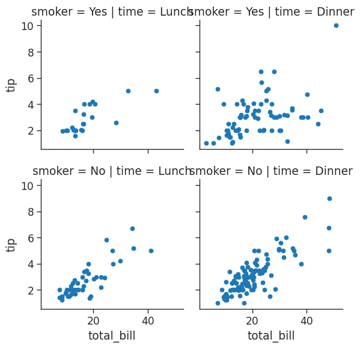

import numpy as np
import pandas as pd
import matplotlib.pyplot as plt
import seaborn as sns
%matplotlib inline
%reload_ext autoreload
%autoreload 2What is seaborn?
There is no universally best way to visualize data. Different questions are best answered by different plots. Seaborn makes it easy to switch between different visual representations by using a consistent dataset-oriented API. Seaborn helps you explore and understand your data.
Its plotting functions operate on dataframes and arrays containing whole datasets and internally perform the necessary semantic mapping and statistical aggregation to produce informative plots. Its dataset-oriented, declarative API lets you focus on what the different elements of your plots mean, rather than on the details of how to draw them.
Setup
Import Data
seaborn has a number of built in datases:
# Seaborn provides a playground of built in datasets
print(sns.get_dataset_names())['anagrams', 'anscombe', 'attention', 'brain_networks', 'car_crashes', 'diamonds', 'dots', 'dowjones', 'exercise', 'flights', 'fmri', 'geyser', 'glue', 'healthexp', 'iris', 'mpg', 'penguins', 'planets', 'seaice', 'taxis', 'tips', 'titanic']For the purposes of this blog we will be working with the car_crashes dataset.
# Load a built in dataset of US car crash
crash_df = sns.load_dataset('car_crashes')
crash_df.head()| total | speeding | alcohol | not_distracted | no_previous | ins_premium | ins_losses | abbrev | |
|---|---|---|---|---|---|---|---|---|
| 0 | 18.8 | 7.332 | 5.640 | 18.048 | 15.040 | 784.55 | 145.08 | AL |
| 1 | 18.1 | 7.421 | 4.525 | 16.290 | 17.014 | 1053.48 | 133.93 | AK |
| 2 | 18.6 | 6.510 | 5.208 | 15.624 | 17.856 | 899.47 | 110.35 | AZ |
| 3 | 22.4 | 4.032 | 5.824 | 21.056 | 21.280 | 827.34 | 142.39 | AR |
| 4 | 12.0 | 4.200 | 3.360 | 10.920 | 10.680 | 878.41 | 165.63 | CA |
Distribution plots
Distribution plot
A distribution plot provides a way to look at a univariate distribution. A univeriate distribution provides a distribution for one variable. For more detail check out the seaborn documentation.
# Kernal Density Estimation with a Histogram is provided
sns.distplot(crash_df['alcohol'])/tmp/ipykernel_206/3403426496.py:3: UserWarning:
`distplot` is a deprecated function and will be removed in seaborn v0.14.0.
Please adapt your code to use either `displot` (a figure-level function with
similar flexibility) or `histplot` (an axes-level function for histograms).
For a guide to updating your code to use the new functions, please see
https://gist.github.com/mwaskom/de44147ed2974457ad6372750bbe5751
sns.distplot(crash_df['alcohol'])<AxesSubplot: xlabel='alcohol', ylabel='Density'>If we just want the KDE on its own:
# Get just the KDE plot
sns.kdeplot(crash_df['alcohol'])<AxesSubplot: xlabel='alcohol', ylabel='Density'>
Kernel Density Estimation (KDE)
The kernel density estimation is included by default but can be removed by setting kde=False.
# kde=False removes the KDE
# Bins define how many buckets to divide the data up into between intervals
sns.distplot(crash_df['alcohol'],
kde=False,
bins=25)/tmp/ipykernel_206/1004551440.py:5: UserWarning:
`distplot` is a deprecated function and will be removed in seaborn v0.14.0.
Please adapt your code to use either `displot` (a figure-level function with
similar flexibility) or `histplot` (an axes-level function for histograms).
For a guide to updating your code to use the new functions, please see
https://gist.github.com/mwaskom/de44147ed2974457ad6372750bbe5751
sns.distplot(crash_df['alcohol'], kde=False, bins=25)<AxesSubplot: xlabel='alcohol'>Joint plot
Let’s say we want to investigate the alcohol and speeding variables and also the relationship between the two. A jointplot compares two distributions and plots a scatter plot by default. We can also include a ‘best fit’ regression line by passing in the argument kind=‘reg’.
# joint plot of speeding vs alcohol
sns.jointplot(x = 'speeding',
y = 'alcohol',
data = crash_df,
kind = 'reg')
As we can see there looks to be a clear positive correlation between speeding and drink-driving.
We can also create a 2D KDE by passing in the argument kind=‘kde’
# joint plot of speeding vs alcohol
sns.jointplot(x = 'speeding',
y = 'alcohol',
data = crash_df,
kind = 'kde')…and we can create a hexagon distribution with kind=‘hex’
# joint plot of speeding vs alcohol
sns.jointplot(x = 'speeding',
y = 'alcohol',
data = crash_df,
kind = 'hex')
Pair plots
Pair Plots plot relationships across the entire DataFrame’s numerical values:
# # pair plot for car_crashes DataFrame
sns.pairplot(crash_df)Note that in addition to the relationship scatterplots we also have a histogram for each variable on the leading diagonal.
Using hue as a categorical variable
TWe can pass in hue=‘some_categorical_variable’ to effectively include a THIRD variable in our pair plot!
Let’s illustrate this using one of the other inbuilt seaborn datasets tips which includes some categorical variables:
# With hue you can pass in a categorical column and the charts will be colorized
# You can use color maps (palette) from Matplotlib to define what colors to use
tips_df = sns.load_dataset('tips')
sns.pairplot(tips_df,
hue = 'sex',
palette = 'Blues')Rug Plot
A Rug Plot plots a single column of datapoints in an array as sticks on an axis. You’ll see a more dense number of lines where the amount is most common. This is like how a histogram is taller where values are more common.
# plot a rugplot of tips
sns.rugplot(tips_df['tip'])<AxesSubplot: xlabel='tip'>We can see that the lines are denser between just below 2 dollars and up towards 3 dollars.
Styling
We can control the overall look of our plots using set_style
# set overall style
sns.set_style('ticks')
# set size of our plot
plt.figure(figsize = (8,4))
# labels
sns.set_context('paper', font_scale = 1.5)
# jointplot of speeding v alcohol from car_crashes DF, include regression line
sns.jointplot(x = 'speeding',
y = 'alcohol',
data = crash_df,
kind = 'reg')
# we can turn the axis spines on or off
sns.despine(left = False,
bottom = True)<Figure size 800x400 with 0 Axes>Categorical Plots
Bar Plots
Bar plot or bar chart can be used to aggregate categorical data based on a function. Mean is the default but we can change the reported summary statistic. For more information see the seaborn documentation.
# plot a barplot showing mean total bill by sex
sns.barplot(x = 'sex',
y = 'total_bill',
data = tips_df)<AxesSubplot: xlabel='sex', ylabel='total_bill'>We can estimate total bill amount based on sex. With estimator we can define functions to use other than the mean like those provided by NumPy : median, std, var, cov or make your own functions
# plot a barplot showing median total bill by sex
sns.barplot(x = 'sex',
y = 'total_bill',
data = tips_df,
estimator = np.median)<AxesSubplot: xlabel='sex', ylabel='total_bill'>Count Plot
A count plot is like a bar plot, but the estimator is counting the number of occurences. For more information see the seaborn documentation.
# plot a count of number of males and females
sns.countplot(x = 'sex',
data = tips_df)<AxesSubplot: xlabel='sex', ylabel='count'>
shift and tab
Hit shift and tab after the function to pull up docstring and the list of possible arguments
Box Plot
A box plot allows you to compare different variables. The box shows the quartiles of the data. The bar in the middle is the median and the box extends 1 standard deviation from the median. The whiskers extend to all the other data aside from the points that are considered to be outliers. For more information see the seaborn documentation.
# create box plots of total bill per day
# use hue to allow comparison between male and female
sns.boxplot(x = 'day',
y = 'total_bill',
data = tips_df,
hue = 'sex')
# Sometimes the labelling can get a bit cluttered. We can control this
# loc=0 moves legend to the best position
plt.legend(loc=0)<matplotlib.legend.Legend at 0x7f31c52d92d0>Interestingly, we can see that men spend more than women on a Friday, but less than women on a Saturday.
Violin Plot
A violin plot is a combination of the boxplot and KDE. Whereas a box plot corresponds to data points, the violin plot uses the KDE estimation of the data points. For more information see the seaborn documentation.
# create a violin plot showing distribution of total bill by day and sex
sns.violinplot(x = 'day',
y = 'total_bill',
data = tips_df,
hue = 'sex')<AxesSubplot: xlabel='day', ylabel='total_bill'># Split allows you to compare how the categories compare to each other
sns.violinplot(x = 'day',
y = 'total_bill',
data = tips_df,
hue = 'sex',
split = True)<AxesSubplot: xlabel='day', ylabel='total_bill'>Strip Plot
The strip plot or dotplot draws a scatter plot representing all data points where one variable is categorical. It is often used to show all observations with a box plot that represents the average distribution. For more information see the seaborn documentation.
plt.figure(figsize = (8,5))
# Jitter spreads data points out so that they aren't stacked on top of each other
# Hue breaks data into men and women
sns.stripplot(x = 'day',
y = 'total_bill',
data = tips_df,
jitter = True,
hue = 'sex',
dodge = False)<AxesSubplot: xlabel='day', ylabel='total_bill'>This looks great, but the data points for male and female are difficult to distinguish. We can set the argument dode=True to separate them amd show them side by side:
plt.figure(figsize = (8,5))
# Jitter spreads data points out so that they aren't stacked on top of each other
# Hue breaks data into men and women
sns.stripplot(x = 'day',
y = 'total_bill',
data = tips_df,
jitter = True,
hue = 'sex',
dodge = True)<AxesSubplot: xlabel='day', ylabel='total_bill'>Swarm plot
A swarm plot is like a strip plot, but points are adjusted so they don’t overlap. It looks like a combination of the violin and strip plots. For more information see the seaborn documentation.
# create a raw swarmplot of total bill bu day
sns.swarmplot(x = 'day',
y = 'total_bill',
data = tips_df)<AxesSubplot: xlabel='day', ylabel='total_bill'>We can then stack a violin plot with a swarm:
# stack a violin plot on top of our swarmplot
sns.violinplot(x = 'day',
y = 'total_bill',
data = tips_df)
sns.swarmplot(x = 'day',
y = 'total_bill',
data = tips_df,
color = 'white')<AxesSubplot: xlabel='day', ylabel='total_bill'>Palettes
Color maps
You can use matplotlib’s color maps for styling
plt.figure(figsize = (8,8))
# let's go for a presentation style using 'talk'
sns.set_style('ticks')
sns.set_context('paper')
# customize our colours using palette argument
sns.stripplot(x = 'day',
y = 'total_bill',
data = tips_df,
hue = 'sex',
palette = 'plasma')
# control location of legend
plt.legend(loc=2)<matplotlib.legend.Legend at 0x7f31c50bcc40>
Setting the legend location
We can control the position of the legend by using plt.legend(loc = )
1 - upper left
2 - lower left
3 - lower right
See the other options
Matrix plots
Heatmaps
Important
To create a heatmap you must have data set up as a matrix where variables are on the columns and rows
For example let’s look at an extract from our car_crashes dataset :
# grab first 5 rows
crash_df.head()| total | speeding | alcohol | not_distracted | no_previous | ins_premium | ins_losses | abbrev | |
|---|---|---|---|---|---|---|---|---|
| 0 | 18.8 | 7.332 | 5.640 | 18.048 | 15.040 | 784.55 | 145.08 | AL |
| 1 | 18.1 | 7.421 | 4.525 | 16.290 | 17.014 | 1053.48 | 133.93 | AK |
| 2 | 18.6 | 6.510 | 5.208 | 15.624 | 17.856 | 899.47 | 110.35 | AZ |
| 3 | 22.4 | 4.032 | 5.824 | 21.056 | 21.280 | 827.34 | 142.39 | AR |
| 4 | 12.0 | 4.200 | 3.360 | 10.920 | 10.680 | 878.41 | 165.63 | CA |
In its current format (with the variables across the columns but not the rows) we won’t be able to produce a heat map for our car_crashes DataFrame. We can transform our DataFrame into the correct format using a correlation function:
plt.figure(figsize=(8,6))
sns.set_context('paper',
font_scale = 1.4)
# transform our dataset into a correlation matrix
crash_mx = crash_df.corr()
crash_mx/tmp/ipykernel_206/2429762792.py:5: FutureWarning: The default value of numeric_only in DataFrame.corr is deprecated. In a future version, it will default to False. Select only valid columns or specify the value of numeric_only to silence this warning.
crash_mx = crash_df.corr()| total | speeding | alcohol | not_distracted | no_previous | ins_premium | ins_losses | |
|---|---|---|---|---|---|---|---|
| total | 1.000000 | 0.611548 | 0.852613 | 0.827560 | 0.956179 | -0.199702 | -0.036011 |
| speeding | 0.611548 | 1.000000 | 0.669719 | 0.588010 | 0.571976 | -0.077675 | -0.065928 |
| alcohol | 0.852613 | 0.669719 | 1.000000 | 0.732816 | 0.783520 | -0.170612 | -0.112547 |
| not_distracted | 0.827560 | 0.588010 | 0.732816 | 1.000000 | 0.747307 | -0.174856 | -0.075970 |
| no_previous | 0.956179 | 0.571976 | 0.783520 | 0.747307 | 1.000000 | -0.156895 | -0.006359 |
| ins_premium | -0.199702 | -0.077675 | -0.170612 | -0.174856 | -0.156895 | 1.000000 | 0.623116 |
| ins_losses | -0.036011 | -0.065928 | -0.112547 | -0.075970 | -0.006359 | 0.623116 | 1.000000 |
<Figure size 800x600 with 0 Axes>Now that we have our data in the correct format we can go ahead and plot out heatmap:
# create a heatmap, annotate and customize from colormaps
sns.heatmap(crash_mx,
annot = True,
cmap = 'Blues')<AxesSubplot: >Another way to prep our data for plotting is to create a pivot table. Let’s use another of seaborn’s built in datasets to illustrate:
flights = sns.load_dataset("flights")
flights| year | month | passengers | |
|---|---|---|---|
| 0 | 1949 | Jan | 112 |
| 1 | 1949 | Feb | 118 |
| 2 | 1949 | Mar | 132 |
| 3 | 1949 | Apr | 129 |
| 4 | 1949 | May | 121 |
| ... | ... | ... | ... |
| 139 | 1960 | Aug | 606 |
| 140 | 1960 | Sep | 508 |
| 141 | 1960 | Oct | 461 |
| 142 | 1960 | Nov | 390 |
| 143 | 1960 | Dec | 432 |
144 rows × 3 columns
We can create a matrix with an index of month, columns representing years and the number of passengers for each:
flights = flights.pivot_table(index = 'month',
columns = 'year',
values = 'passengers')
flights| year | 1949 | 1950 | 1951 | 1952 | 1953 | 1954 | 1955 | 1956 | 1957 | 1958 | 1959 | 1960 |
|---|---|---|---|---|---|---|---|---|---|---|---|---|
| month | ||||||||||||
| Jan | 112 | 115 | 145 | 171 | 196 | 204 | 242 | 284 | 315 | 340 | 360 | 417 |
| Feb | 118 | 126 | 150 | 180 | 196 | 188 | 233 | 277 | 301 | 318 | 342 | 391 |
| Mar | 132 | 141 | 178 | 193 | 236 | 235 | 267 | 317 | 356 | 362 | 406 | 419 |
| Apr | 129 | 135 | 163 | 181 | 235 | 227 | 269 | 313 | 348 | 348 | 396 | 461 |
| May | 121 | 125 | 172 | 183 | 229 | 234 | 270 | 318 | 355 | 363 | 420 | 472 |
| Jun | 135 | 149 | 178 | 218 | 243 | 264 | 315 | 374 | 422 | 435 | 472 | 535 |
| Jul | 148 | 170 | 199 | 230 | 264 | 302 | 364 | 413 | 465 | 491 | 548 | 622 |
| Aug | 148 | 170 | 199 | 242 | 272 | 293 | 347 | 405 | 467 | 505 | 559 | 606 |
| Sep | 136 | 158 | 184 | 209 | 237 | 259 | 312 | 355 | 404 | 404 | 463 | 508 |
| Oct | 119 | 133 | 162 | 191 | 211 | 229 | 274 | 306 | 347 | 359 | 407 | 461 |
| Nov | 104 | 114 | 146 | 172 | 180 | 203 | 237 | 271 | 305 | 310 | 362 | 390 |
| Dec | 118 | 140 | 166 | 194 | 201 | 229 | 278 | 306 | 336 | 337 | 405 | 432 |
Now that we have our data in the correct format we can go ahead and plot out heatmap:
# You can separate data with lines
sns.heatmap(flights,
cmap = 'Blues',
linecolor = 'white',
linewidth = 1)<AxesSubplot: xlabel='year', ylabel='month'>We see that flights have increased over time and that most people travel in July and August.
Cluster Maps
A Cluster map is a hierarchically clustered heatmap. The distance between points is calculated, the closest are joined, and this continues for the next closest (It compares columns / rows of the heatmap). For more information see the seaborn documentation.
Let’s illustrate using another of seaborn’s built-in datasets:
iris = sns.load_dataset('iris')
iris| sepal_length | sepal_width | petal_length | petal_width | species | |
|---|---|---|---|---|---|
| 0 | 5.1 | 3.5 | 1.4 | 0.2 | setosa |
| 1 | 4.9 | 3.0 | 1.4 | 0.2 | setosa |
| 2 | 4.7 | 3.2 | 1.3 | 0.2 | setosa |
| 3 | 4.6 | 3.1 | 1.5 | 0.2 | setosa |
| 4 | 5.0 | 3.6 | 1.4 | 0.2 | setosa |
| ... | ... | ... | ... | ... | ... |
| 145 | 6.7 | 3.0 | 5.2 | 2.3 | virginica |
| 146 | 6.3 | 2.5 | 5.0 | 1.9 | virginica |
| 147 | 6.5 | 3.0 | 5.2 | 2.0 | virginica |
| 148 | 6.2 | 3.4 | 5.4 | 2.3 | virginica |
| 149 | 5.9 | 3.0 | 5.1 | 1.8 | virginica |
150 rows × 5 columns
It would be useful to carve up our numerical data based on the different species in order to identify any trends.
# remove the column species using .pop
species = iris.pop('species')
sns.clustermap(iris)Let’s try this out on our flight data we looked at earlier:
# standard_scale normalizes the data to focus on the clustering
sns.clustermap(flights,
cmap = "Blues",
standard_scale = 1)With our flights data we can see that years have been reoriented to place like data closer together. You can see clusters of data for July & August for the years 59 & 60.
Pair Grids
Pair Grids allow us to create a grid of different plots with complete control over what is displayed. For more information see the seaborn documentation.
# load in iris dataset
iris = sns.load_dataset('iris')
# Create the empty grid system using the provided data
# Colorize based on species
iris_g = sns.PairGrid(iris,
hue = 'species')
# Put a histogram on the diagonal
iris_g.map_diag(plt.hist)
# And a scatter plot every place else
iris_g.map_offdiag(plt.scatter)We can further tailor by having different plots in the upper, lower and diagonal:
# load in iris dataset
iris = sns.load_dataset('iris')
# Create the empty grid system using the provided data
# Colorize based on species
iris_g = sns.PairGrid(iris,
hue = 'species')
# Put a histogram on the diagonal
iris_g.map_diag(plt.hist)
# Have different plots in upper, lower and diagonal
iris_g.map_upper(plt.scatter)
iris_g.map_lower(sns.kdeplot)We can also define the x and y variables for our custom grids:
# load in iris dataset
iris = sns.load_dataset('iris')
# You can define define variables for x & y for a custom grid
iris_g = sns.PairGrid(iris,
hue = "species",
x_vars = ["sepal_length", "sepal_width"],
y_vars = ["petal_length", "petal_width"])
iris_g.map(plt.scatter)
# Add a legend last
iris_g.add_legend()
Facet Grid
A facet grid allows us to print multiple plots in a grid where we can define columns & rows. For further information see the seaborn documentation.
Let’s return to our tips dataset to illustrate what can be done usin facet grids.
# Get histogram for smokers and non with total bill for lunch & dinner
tips_fg = sns.FacetGrid(tips_df,
col = 'time',
row = 'smoker')
# You can pass in attributes for the histogram
tips_fg.map(plt.hist,
'total_bill',
bins = 8)/home/stephen137/mambaforge/lib/python3.10/site-packages/seaborn/axisgrid.py:745: FutureWarning: iteritems is deprecated and will be removed in a future version. Use .items instead.
plot_args = [v for k, v in plot_data.iteritems()]
/home/stephen137/mambaforge/lib/python3.10/site-packages/seaborn/axisgrid.py:745: FutureWarning: iteritems is deprecated and will be removed in a future version. Use .items instead.
plot_args = [v for k, v in plot_data.iteritems()]
/home/stephen137/mambaforge/lib/python3.10/site-packages/seaborn/axisgrid.py:745: FutureWarning: iteritems is deprecated and will be removed in a future version. Use .items instead.
plot_args = [v for k, v in plot_data.iteritems()]
/home/stephen137/mambaforge/lib/python3.10/site-packages/seaborn/axisgrid.py:745: FutureWarning: iteritems is deprecated and will be removed in a future version. Use .items instead.
plot_args = [v for k, v in plot_data.iteritems()]# Get histogram for smokers and non with total bill for lunch & dinner
tips_fg = sns.FacetGrid(tips_df,
col = 'time',
row = 'smoker')
# Create a scatter plot with data on total bill & tip (You need 2 parameters)
tips_fg.map(plt.scatter,
'total_bill',
'tip')/home/stephen137/mambaforge/lib/python3.10/site-packages/seaborn/axisgrid.py:745: FutureWarning: iteritems is deprecated and will be removed in a future version. Use .items instead.
plot_args = [v for k, v in plot_data.iteritems()]
/home/stephen137/mambaforge/lib/python3.10/site-packages/seaborn/axisgrid.py:745: FutureWarning: iteritems is deprecated and will be removed in a future version. Use .items instead.
plot_args = [v for k, v in plot_data.iteritems()]
/home/stephen137/mambaforge/lib/python3.10/site-packages/seaborn/axisgrid.py:745: FutureWarning: iteritems is deprecated and will be removed in a future version. Use .items instead.
plot_args = [v for k, v in plot_data.iteritems()]
/home/stephen137/mambaforge/lib/python3.10/site-packages/seaborn/axisgrid.py:745: FutureWarning: iteritems is deprecated and will be removed in a future version. Use .items instead.
plot_args = [v for k, v in plot_data.iteritems()]
# We can assign variables to different colors and increase size of grid
# Aspect is 1.3 x the size of height
# You can change the order of the columns
# Define the palette used
tips_fg = sns.FacetGrid(tips_df,
col = 'time',
hue = 'smoker',
height = 4,
aspect = 1.3)
tips_fg.map(plt.scatter,
"total_bill",
"tip")/home/stephen137/mambaforge/lib/python3.10/site-packages/seaborn/axisgrid.py:745: FutureWarning: iteritems is deprecated and will be removed in a future version. Use .items instead.
plot_args = [v for k, v in plot_data.iteritems()]
/home/stephen137/mambaforge/lib/python3.10/site-packages/seaborn/axisgrid.py:745: FutureWarning: iteritems is deprecated and will be removed in a future version. Use .items instead.
plot_args = [v for k, v in plot_data.iteritems()]
/home/stephen137/mambaforge/lib/python3.10/site-packages/seaborn/axisgrid.py:745: FutureWarning: iteritems is deprecated and will be removed in a future version. Use .items instead.
plot_args = [v for k, v in plot_data.iteritems()]
/home/stephen137/mambaforge/lib/python3.10/site-packages/seaborn/axisgrid.py:745: FutureWarning: iteritems is deprecated and will be removed in a future version. Use .items instead.
plot_args = [v for k, v in plot_data.iteritems()]We can change the column order:
# We can assign variables to different colors and increase size of grid
# Aspect is 1.3 x the size of height
# Define the palette used
tips_fg = sns.FacetGrid(tips_df,
col = 'time',
hue = 'smoker',
height = 4,
aspect = 1.3,
# We can change the order of the columns and paletter
col_order = ['Dinner', 'Lunch'],
palette = 'Set1')
# We can change the edge colour of our dots to white
tips_fg.map(plt.scatter,
"total_bill",
"tip",
edgecolor = 'w')/home/stephen137/mambaforge/lib/python3.10/site-packages/seaborn/axisgrid.py:745: FutureWarning: iteritems is deprecated and will be removed in a future version. Use .items instead.
plot_args = [v for k, v in plot_data.iteritems()]
/home/stephen137/mambaforge/lib/python3.10/site-packages/seaborn/axisgrid.py:745: FutureWarning: iteritems is deprecated and will be removed in a future version. Use .items instead.
plot_args = [v for k, v in plot_data.iteritems()]
/home/stephen137/mambaforge/lib/python3.10/site-packages/seaborn/axisgrid.py:745: FutureWarning: iteritems is deprecated and will be removed in a future version. Use .items instead.
plot_args = [v for k, v in plot_data.iteritems()]
/home/stephen137/mambaforge/lib/python3.10/site-packages/seaborn/axisgrid.py:745: FutureWarning: iteritems is deprecated and will be removed in a future version. Use .items instead.
plot_args = [v for k, v in plot_data.iteritems()]# create a dictionary to define the size, linewidth and edge color of our markers
kws = dict(s=50,
linewidth=.5,
edgecolor='w')
# let's go to town on the customizations! note we can reference the dictionary we just created
tips_fg = sns.FacetGrid(tips_df,
col='sex',
hue='smoker',
height=4,
aspect=1.3,
hue_order=['Yes', 'No'],
hue_kws=dict(marker=['^', 'v'])
)
tips_fg.map(plt.scatter,
'total_bill',
'tip',
**kws
)/home/stephen137/mambaforge/lib/python3.10/site-packages/seaborn/axisgrid.py:745: FutureWarning: iteritems is deprecated and will be removed in a future version. Use .items instead.
plot_args = [v for k, v in plot_data.iteritems()]
/home/stephen137/mambaforge/lib/python3.10/site-packages/seaborn/axisgrid.py:745: FutureWarning: iteritems is deprecated and will be removed in a future version. Use .items instead.
plot_args = [v for k, v in plot_data.iteritems()]
/home/stephen137/mambaforge/lib/python3.10/site-packages/seaborn/axisgrid.py:745: FutureWarning: iteritems is deprecated and will be removed in a future version. Use .items instead.
plot_args = [v for k, v in plot_data.iteritems()]
/home/stephen137/mambaforge/lib/python3.10/site-packages/seaborn/axisgrid.py:745: FutureWarning: iteritems is deprecated and will be removed in a future version. Use .items instead.
plot_args = [v for k, v in plot_data.iteritems()]Here hue has been used to denote smoker vs non-smoker - blue upward pointing markers represent smokers, and the orange downward facing markers represent non-smokers.
Let’s look at a seaborn dataset that we haven’t seeen yet. This dataframe provides scores for different students based on the level of attention they could provide during testing:
# load in attention dataset and take a look at first 13 rows
att_df = sns.load_dataset('attention')
att_df.head(13)| Unnamed: 0 | subject | attention | solutions | score | |
|---|---|---|---|---|---|
| 0 | 0 | 1 | divided | 1 | 2.0 |
| 1 | 1 | 2 | divided | 1 | 3.0 |
| 2 | 2 | 3 | divided | 1 | 3.0 |
| 3 | 3 | 4 | divided | 1 | 5.0 |
| 4 | 4 | 5 | divided | 1 | 4.0 |
| 5 | 5 | 6 | divided | 1 | 5.0 |
| 6 | 6 | 7 | divided | 1 | 5.0 |
| 7 | 7 | 8 | divided | 1 | 5.0 |
| 8 | 8 | 9 | divided | 1 | 2.0 |
| 9 | 9 | 10 | divided | 1 | 6.0 |
| 10 | 10 | 11 | focused | 1 | 6.0 |
| 11 | 11 | 12 | focused | 1 | 8.0 |
| 12 | 12 | 13 | focused | 1 | 6.0 |
# Put each student (subject) in their own plot with 5 per line and plot their scores
att_fg = sns.FacetGrid(att_df,
col = 'subject',
col_wrap = 5,
height = 1.5
)
att_fg.map(plt.plot,
'solutions',
'score',
marker ='.')/home/stephen137/mambaforge/lib/python3.10/site-packages/seaborn/axisgrid.py:745: FutureWarning: iteritems is deprecated and will be removed in a future version. Use .items instead.
plot_args = [v for k, v in plot_data.iteritems()]
/home/stephen137/mambaforge/lib/python3.10/site-packages/seaborn/axisgrid.py:745: FutureWarning: iteritems is deprecated and will be removed in a future version. Use .items instead.
plot_args = [v for k, v in plot_data.iteritems()]
/home/stephen137/mambaforge/lib/python3.10/site-packages/seaborn/axisgrid.py:745: FutureWarning: iteritems is deprecated and will be removed in a future version. Use .items instead.
plot_args = [v for k, v in plot_data.iteritems()]
/home/stephen137/mambaforge/lib/python3.10/site-packages/seaborn/axisgrid.py:745: FutureWarning: iteritems is deprecated and will be removed in a future version. Use .items instead.
plot_args = [v for k, v in plot_data.iteritems()]
/home/stephen137/mambaforge/lib/python3.10/site-packages/seaborn/axisgrid.py:745: FutureWarning: iteritems is deprecated and will be removed in a future version. Use .items instead.
plot_args = [v for k, v in plot_data.iteritems()]
/home/stephen137/mambaforge/lib/python3.10/site-packages/seaborn/axisgrid.py:745: FutureWarning: iteritems is deprecated and will be removed in a future version. Use .items instead.
plot_args = [v for k, v in plot_data.iteritems()]
/home/stephen137/mambaforge/lib/python3.10/site-packages/seaborn/axisgrid.py:745: FutureWarning: iteritems is deprecated and will be removed in a future version. Use .items instead.
plot_args = [v for k, v in plot_data.iteritems()]
/home/stephen137/mambaforge/lib/python3.10/site-packages/seaborn/axisgrid.py:745: FutureWarning: iteritems is deprecated and will be removed in a future version. Use .items instead.
plot_args = [v for k, v in plot_data.iteritems()]
/home/stephen137/mambaforge/lib/python3.10/site-packages/seaborn/axisgrid.py:745: FutureWarning: iteritems is deprecated and will be removed in a future version. Use .items instead.
plot_args = [v for k, v in plot_data.iteritems()]
/home/stephen137/mambaforge/lib/python3.10/site-packages/seaborn/axisgrid.py:745: FutureWarning: iteritems is deprecated and will be removed in a future version. Use .items instead.
plot_args = [v for k, v in plot_data.iteritems()]
/home/stephen137/mambaforge/lib/python3.10/site-packages/seaborn/axisgrid.py:745: FutureWarning: iteritems is deprecated and will be removed in a future version. Use .items instead.
plot_args = [v for k, v in plot_data.iteritems()]
/home/stephen137/mambaforge/lib/python3.10/site-packages/seaborn/axisgrid.py:745: FutureWarning: iteritems is deprecated and will be removed in a future version. Use .items instead.
plot_args = [v for k, v in plot_data.iteritems()]
/home/stephen137/mambaforge/lib/python3.10/site-packages/seaborn/axisgrid.py:745: FutureWarning: iteritems is deprecated and will be removed in a future version. Use .items instead.
plot_args = [v for k, v in plot_data.iteritems()]
/home/stephen137/mambaforge/lib/python3.10/site-packages/seaborn/axisgrid.py:745: FutureWarning: iteritems is deprecated and will be removed in a future version. Use .items instead.
plot_args = [v for k, v in plot_data.iteritems()]
/home/stephen137/mambaforge/lib/python3.10/site-packages/seaborn/axisgrid.py:745: FutureWarning: iteritems is deprecated and will be removed in a future version. Use .items instead.
plot_args = [v for k, v in plot_data.iteritems()]
/home/stephen137/mambaforge/lib/python3.10/site-packages/seaborn/axisgrid.py:745: FutureWarning: iteritems is deprecated and will be removed in a future version. Use .items instead.
plot_args = [v for k, v in plot_data.iteritems()]
/home/stephen137/mambaforge/lib/python3.10/site-packages/seaborn/axisgrid.py:745: FutureWarning: iteritems is deprecated and will be removed in a future version. Use .items instead.
plot_args = [v for k, v in plot_data.iteritems()]
/home/stephen137/mambaforge/lib/python3.10/site-packages/seaborn/axisgrid.py:745: FutureWarning: iteritems is deprecated and will be removed in a future version. Use .items instead.
plot_args = [v for k, v in plot_data.iteritems()]
/home/stephen137/mambaforge/lib/python3.10/site-packages/seaborn/axisgrid.py:745: FutureWarning: iteritems is deprecated and will be removed in a future version. Use .items instead.
plot_args = [v for k, v in plot_data.iteritems()]
/home/stephen137/mambaforge/lib/python3.10/site-packages/seaborn/axisgrid.py:745: FutureWarning: iteritems is deprecated and will be removed in a future version. Use .items instead.
plot_args = [v for k, v in plot_data.iteritems()]Regression Plots
Let’s revisit the tips dataset used earlier. Let’s recall what our dataset looks like:
# grab first 5 rows
tips_df.head()| total_bill | tip | sex | smoker | day | time | size | |
|---|---|---|---|---|---|---|---|
| 0 | 16.99 | 1.01 | Female | No | Sun | Dinner | 2 |
| 1 | 10.34 | 1.66 | Male | No | Sun | Dinner | 3 |
| 2 | 21.01 | 3.50 | Male | No | Sun | Dinner | 3 |
| 3 | 23.68 | 3.31 | Male | No | Sun | Dinner | 2 |
| 4 | 24.59 | 3.61 | Female | No | Sun | Dinner | 4 |
Say we wanted to explore the relationship between tip size and total bill size comparing men and women:
plt.figure(figsize=(8,6))
sns.set_context('paper',
font_scale = 1.4)
sns.lmplot(x = 'total_bill',
y = 'tip',
hue = 'sex',
data = tips_df,
markers = [ 'o', '^'],
scatter_kws = { 's' : 100, 'linewidth': 0.5, 'edgecolor': 'w'})
<Figure size 800x600 with 0 Axes>It might be useful to see the equivalent broken down by day:
# sns.lmplot(x='total_bill', y='tip', col='sex', row='time', data=tips_df)
tips_df.head()
# Makes the fonts more readable
sns.set_context('poster',
font_scale=1.4)
sns.lmplot(x='total_bill',
y='tip', data=tips_df,
col='day',
hue='sex',
height=8,
aspect=0.6)Acknowledgements
Thanks once again to Santiago for signposting this video posted by Derek Banas. This blog was written after interactively working through it.
%%HTML
<iframe width="560" height="315" src="https://www.youtube.com/embed/6GUZXDef2U0" title="YouTube video player" frameborder="0" allow="accelerometer; autoplay; clipboard-write; encrypted-media; gyroscope; picture-in-picture; web-share" allowfullscreen></iframe>